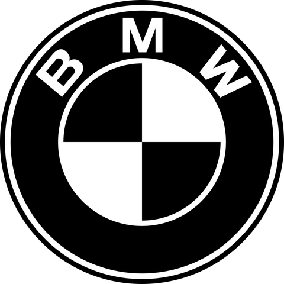
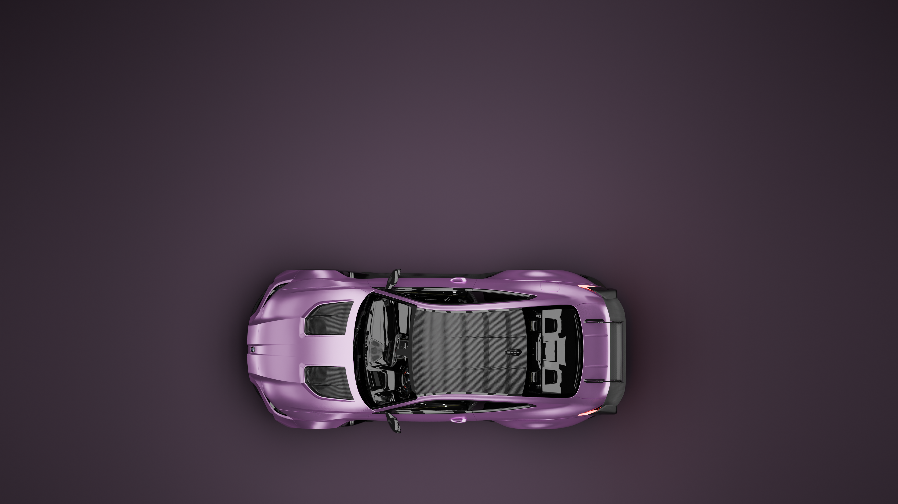
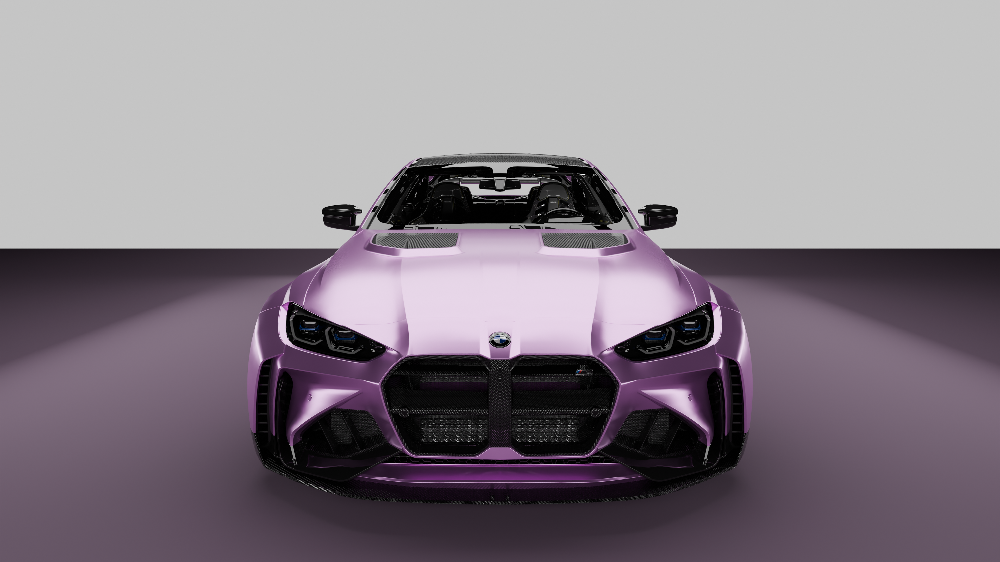
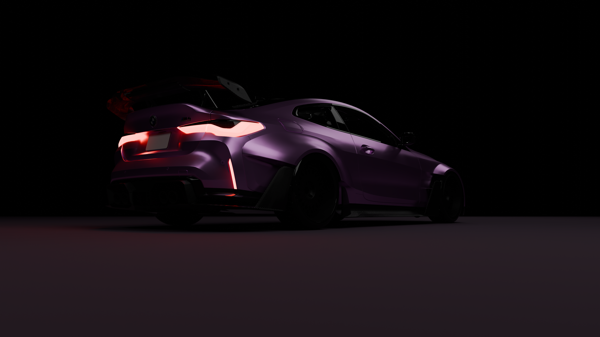
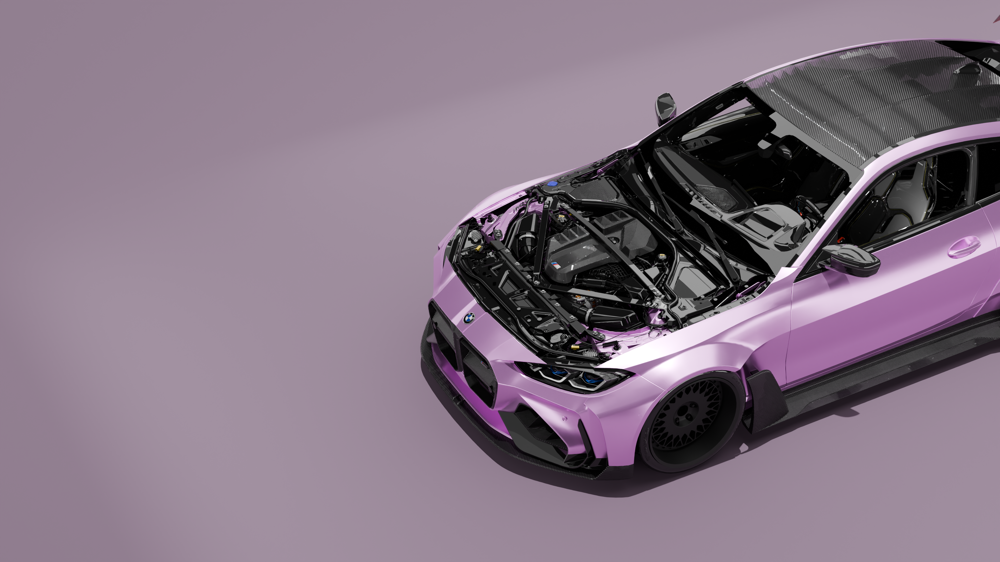
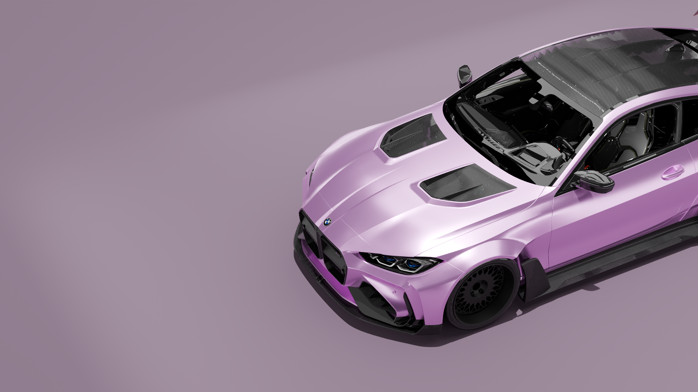
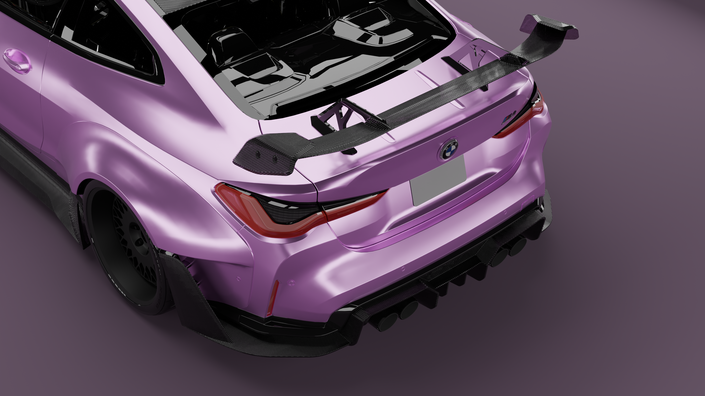
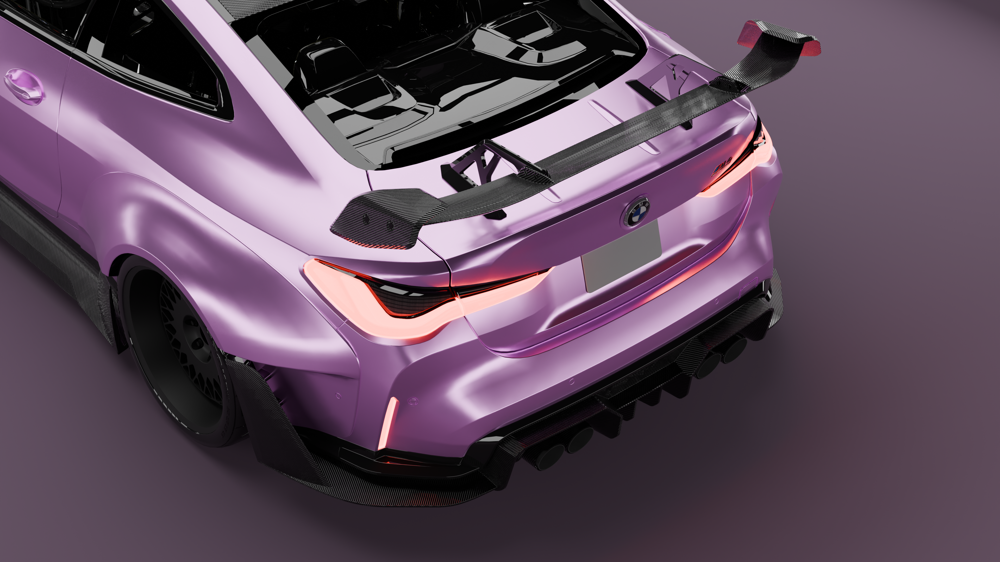
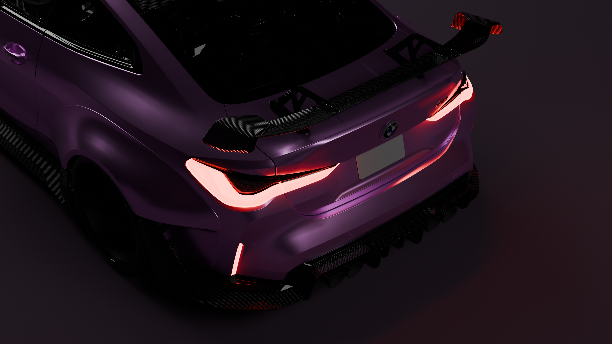

Downforce
+1,104N
Downforce (N)
171→1275

V2 carbon fiber full body-kit
V2 carbon fiber full body-kit



A high-performance engine engineered to complement the bodykit’s aggressive styling, delivering enhanced power, sharper performance, and an unmistakable street presence. Built to turn heads and dominate the road, every detail is designed to make a statement.




ADRO carbon fiber bodykit